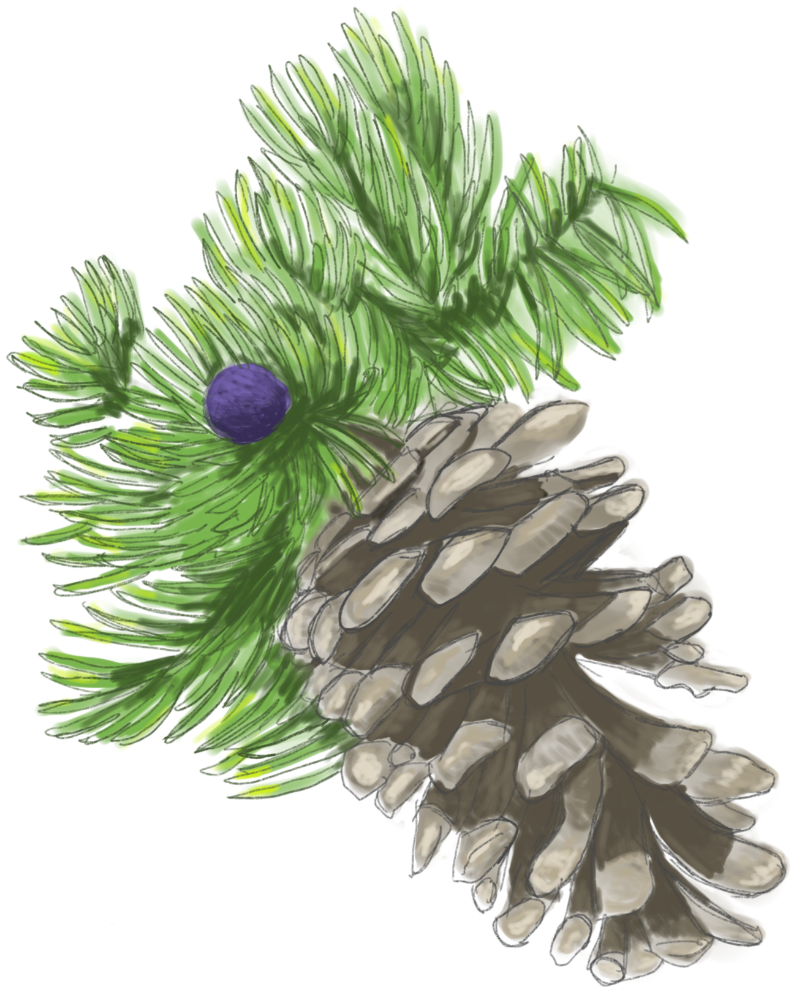
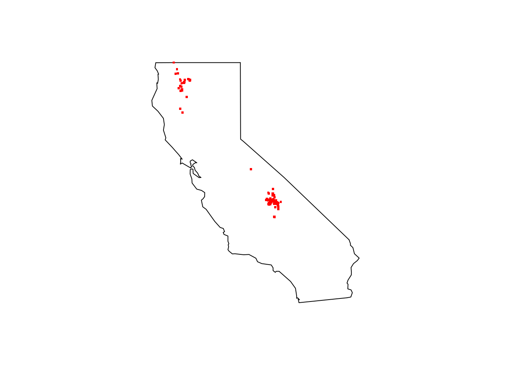
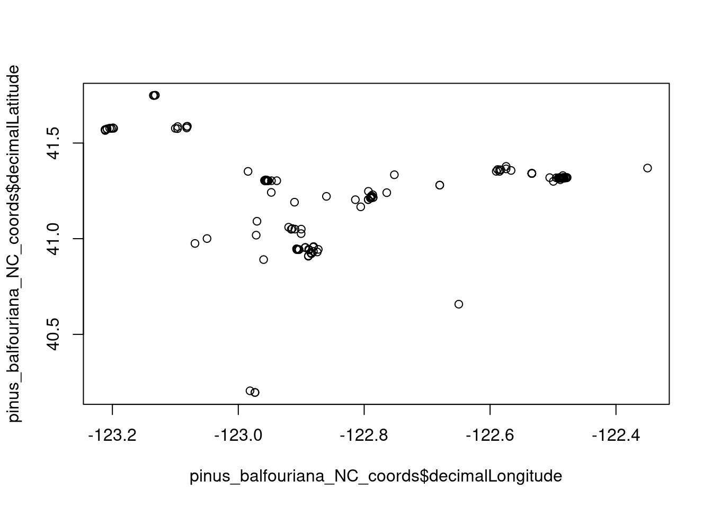
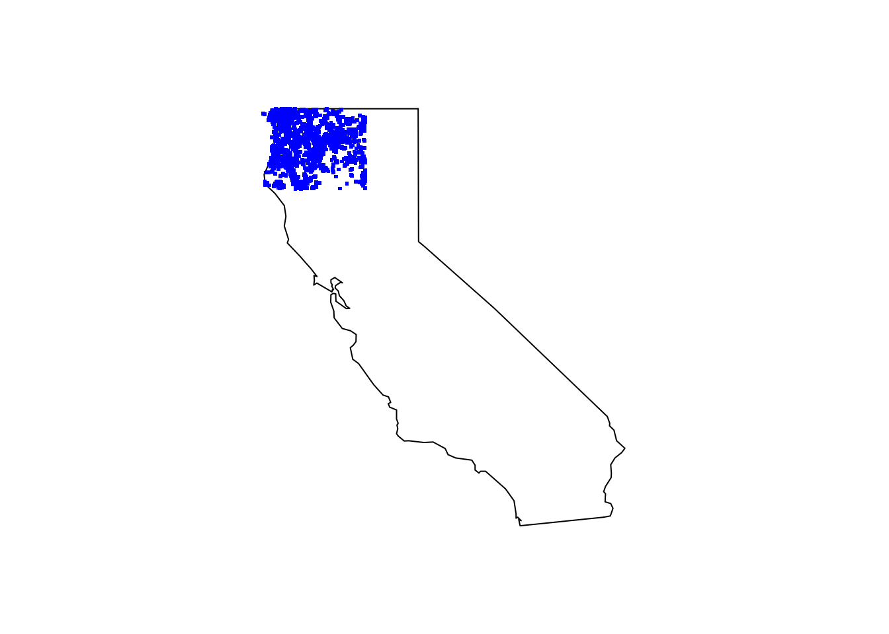
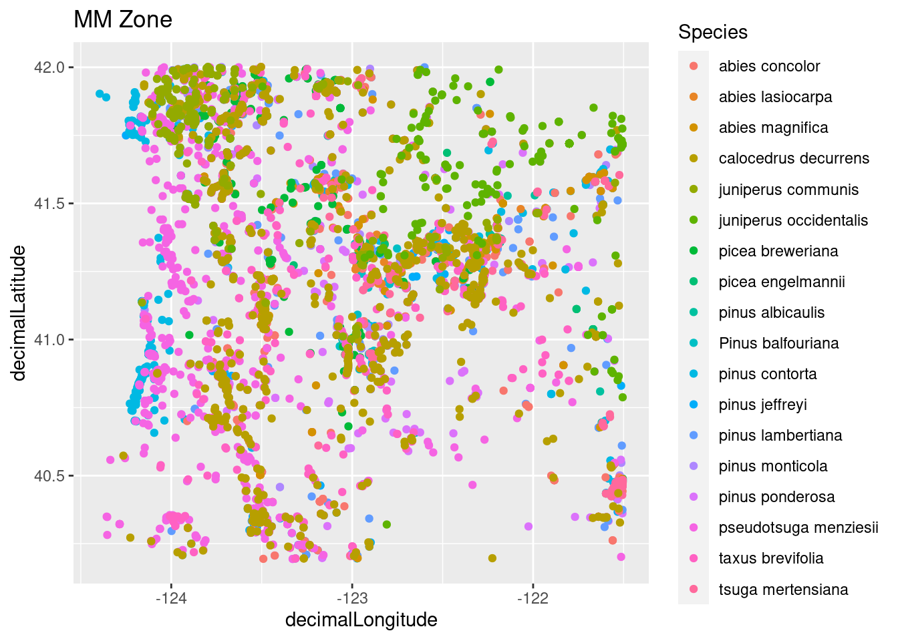

library(rgbif)
library(tidyverse)
library(data.table)
library(maps)
library(leaflet)Miracle Mile Conifer Species
species distribution
modeling
GBIF
GIS
maps
–Mapping Species Occurance

Introduction
Overall, my research aims to understand how environmental factors, like wild fires, influence biodiversity. One of the most used databases for measuring biodiversity is the Global Biodiversity Information Facility GBIF. This is post is a brief introduction of how to use GBIF, using the example of mapping a few conifer species in California.
Load the libraries
Part 1 -Mapping one species
Using the R package function occ_data() request data from the GBIF database with the species name, selecting the observations that have a coordinate, and limiting the query to 10000 observations.
pinus_balfouriana <- occ_data(scientificName = "Pinus balfouriana", hasCoordinate = TRUE, limit = 1000)Inspect the data structure.
summary(pinus_balfouriana) Length Class Mode
meta 4 -none- list
data 124 tbl_df listThere are many different groups that contribute data to GBIF. Make sure you cite them accordingly so we can continue to have a great stream of species occurrence data. As a a few examples this species has curated research grade observations from iNaturalist and many from the Humboldt State University.
head(gbif_citation(pinus_balfouriana), 2)Warning: gbif_citation() for occ_search() and occ_data() is deprecated.
Use rgbif::occ_download() or rgbif::derived_dataset() instead.[[1]]
<<rgbif citation>>
Citation: iNaturalist contributors, iNaturalist (2023). iNaturalist
Research-grade Observations. iNaturalist.org. Occurrence dataset
https://doi.org/10.15468/ab3s5x accessed via GBIF.org on 2023-03-29..
Accessed from R via rgbif (https://github.com/ropensci/rgbif) on
2023-03-29
Rights: http://creativecommons.org/licenses/by-nc/4.0/legalcode
[[2]]
<<rgbif citation>>
Citation: Rancho Santa Ana Botanic Garden (2023). RSA - California Botanic
Garden Herbarium. Occurrence dataset https://doi.org/10.15468/0yosx9
accessed via GBIF.org on 2023-03-29.. Accessed from R via rgbif
(https://github.com/ropensci/rgbif) on 2023-03-29
Rights: http://creativecommons.org/licenses/by-nc/4.0/legalcodeTake a look at what types of data are collected.
head(names(pinus_balfouriana$data))[1] "key" "scientificName" "decimalLatitude" "decimalLongitude"
[5] "issues" "datasetKey" The default GBIF query returns 126 columns of data. We do not have time to go through all of them for a single post so I will subset some important ones for some exploratory plotting purposes. Here I subset the Latitude and Longitude coordinates that we will use for mapping, if the species does occur (important for modeling in future posts), how uncertain the observation is in meters, and the references for the observation.
pinus_balfouriana_coords <- pinus_balfouriana$data[ , c("decimalLongitude", "decimalLatitude",
"occurrenceStatus", "coordinateUncertaintyInMeters", "references")]# check out how the data is structured
head(pinus_balfouriana_coords)# A tibble: 6 × 5
decimalLongitude decimalLatitude occurrenceStatus coordinateUncertai…¹ refer…²
<dbl> <dbl> <chr> <dbl> <chr>
1 -118. 36.5 PRESENT 4 https:…
2 -118. 36.5 PRESENT 4 https:…
3 -118. 36.5 PRESENT NA https:…
4 -123. 41.2 PRESENT 11 https:…
5 -118. 36.5 PRESENT 65 https:…
6 -118. 36.5 PRESENT 47 https:…
# … with abbreviated variable names ¹coordinateUncertaintyInMeters, ²referencessummary(pinus_balfouriana_coords) decimalLongitude decimalLatitude occurrenceStatus
Min. :-123.3 Min. :35.92 Length:1000
1st Qu.:-118.4 1st Qu.:36.45 Class :character
Median :-118.4 Median :36.58 Mode :character
Mean :-118.8 Mean :37.04
3rd Qu.:-118.3 3rd Qu.:36.62
Max. :-118.0 Max. :42.01
coordinateUncertaintyInMeters references
Min. : 2 Length:1000
1st Qu.: 5 Class :character
Median : 19 Mode :character
Mean : 2234
3rd Qu.: 185
Max. :28534
NA's :777 # pinus_balfouriana_coords$decimalLongitude # remove this row of bad data
pinus_balfouriana_coords <- slice(pinus_balfouriana_coords, -(278))# two map functions... be clear! There are a few map functions with these different libraries loaded.
#?map()
maps::map(database = "state", region = "california")
points(pinus_balfouriana_coords[ , c("decimalLongitude", "decimalLatitude")], pch = ".", col = "red", cex = 3)
Subset our search to only Northern California
mm_geometry <- paste('POLYGON((-124.4323 42.0021, -121.5045 42.0021, -121.5045 40.194, -124.4323 40.194, -124.4323 42.0021))')pinus_balfouriana_NC <- occ_data(scientificName = "Pinus balfouriana", hasCoordinate = TRUE, limit = 1000,
geometry = mm_geometry )
head(pinus_balfouriana_NC)$meta
$meta$offset
[1] 0
$meta$limit
[1] 300
$meta$endOfRecords
[1] TRUE
$meta$count
[1] 151
$data
# A tibble: 151 × 125
key scien…¹ decim…² decim…³ issues datas…⁴ publi…⁵ insta…⁶ publi…⁷ proto…⁸
<chr> <chr> <dbl> <dbl> <chr> <chr> <chr> <chr> <chr> <chr>
1 39470… Pinus … 41.2 -123. cdc,c… 50c950… 28eb1a… 997448… US DWC_AR…
2 39474… Pinus … 41.2 -123. cdc,c… 50c950… 28eb1a… 997448… US DWC_AR…
3 39472… Pinus … 41.3 -122. cdc,c… 50c950… 28eb1a… 997448… US DWC_AR…
4 39612… Pinus … 41.2 -123. cdc,c… 50c950… 28eb1a… 997448… US DWC_AR…
5 38729… Pinus … 41.2 -123. cdc,c… 50c950… 28eb1a… 997448… US DWC_AR…
6 38734… Pinus … 41.2 -123. cdc,c… 50c950… 28eb1a… 997448… US DWC_AR…
7 39609… Pinus … 40.9 -123. cdc,c… 50c950… 28eb1a… 997448… US DWC_AR…
8 40548… Pinus … 41.3 -122. cdc,c… 50c950… 28eb1a… 997448… US DWC_AR…
9 38736… Pinus … 41.3 -123. cdc,c… 50c950… 28eb1a… 997448… US DWC_AR…
10 39471… Pinus … 41.3 -122. cdc,c… 50c950… 28eb1a… 997448… US DWC_AR…
# … with 141 more rows, 115 more variables: lastCrawled <chr>,
# lastParsed <chr>, crawlId <int>, hostingOrganizationKey <chr>,
# basisOfRecord <chr>, occurrenceStatus <chr>, taxonKey <int>,
# kingdomKey <int>, phylumKey <int>, classKey <int>, orderKey <int>,
# familyKey <int>, genusKey <int>, speciesKey <int>, acceptedTaxonKey <int>,
# acceptedScientificName <chr>, kingdom <chr>, phylum <chr>, order <chr>,
# family <chr>, genus <chr>, species <chr>, genericName <chr>, …pinus_balfouriana_NC_coords <- pinus_balfouriana_NC$data[ , c("decimalLongitude", "decimalLatitude",
"individualCount", "occurrenceStatus", "coordinateUncertaintyInMeters",
"institutionCode", "references")]Plot the data in a few different ways to see if there is anything strange.
plot(pinus_balfouriana_NC_coords$decimalLongitude, pinus_balfouriana_NC_coords$decimalLatitude) # examine the data
pinus_balfouriana_NC_coords %>% leaflet() %>% addTiles() %>%
addMarkers(~decimalLongitude, ~decimalLatitude)Part 2- Map Multiple species
First test the workflow with only a few species then do entire batch.
# The test is commented out. Uncomment to test first.
# mm_species <- c("Pinus balfouriana", "pinus albicaulis", "pinus monticola") # uncomment to run small test version
# Entire miracle mile species set
mm_species <- c("Pinus balfouriana", "pinus albicaulis", "pinus monticola", "pinus jeffreyi", "pinus ponderosa", "pinus contorta", "pinus lambertiana", "abies concolor", "abies magnifica", "abies lasiocarpa", "picea engelmannii", "picea breweriana", "tsuga mertensiana", "pseudotsuga menziesii", "taxus brevifolia", "calocedrus decurrens", "juniperus communis", "juniperus occidentalis")
mm_all <- occ_data(scientificName = mm_species, hasCoordinate = TRUE, limit = 1000,
geometry = mm_geometry)
summary(mm_all) Length Class Mode
Pinus balfouriana 2 -none- list
pinus albicaulis 2 -none- list
pinus monticola 2 -none- list
pinus jeffreyi 2 -none- list
pinus ponderosa 2 -none- list
pinus contorta 2 -none- list
pinus lambertiana 2 -none- list
abies concolor 2 -none- list
abies magnifica 2 -none- list
abies lasiocarpa 2 -none- list
picea engelmannii 2 -none- list
picea breweriana 2 -none- list
tsuga mertensiana 2 -none- list
pseudotsuga menziesii 2 -none- list
taxus brevifolia 2 -none- list
calocedrus decurrens 2 -none- list
juniperus communis 2 -none- list
juniperus occidentalis 2 -none- listmm_species_coords_list <- vector("list", length(mm_species))
names(mm_species_coords_list) <- mm_species
for (x in mm_species) {
coords <- mm_all[[x]]$data[ , c("decimalLongitude", "decimalLatitude", "occurrenceStatus", "coordinateUncertaintyInMeters", "institutionCode", "references")]
mm_species_coords_list[[x]] <- data.frame(species = x, coords)
}Using the rbindlist() function from the data.frame package to take all of the species observations from a list to a large data.frame. The columns are the species name, the latitude and longitude coordinates, whether or not there was an observation, if there is any uncertainty about how accurate the GPS coordinate was, what platform the observation was made on, and the specific reference for the observation. Make sure you cite the references so we can keep these rich data streams coming!
tree_df <- rbindlist(mm_species_coords_list, fill = T)
dim(tree_df)[1] 6643 7head(tree_df) species decimalLongitude decimalLatitude occurrenceStatus
1: Pinus balfouriana -122.7895 41.21823 PRESENT
2: Pinus balfouriana -122.7896 41.21239 PRESENT
3: Pinus balfouriana -122.4852 41.31694 PRESENT
4: Pinus balfouriana -122.8140 41.20379 PRESENT
5: Pinus balfouriana -122.7933 41.24757 PRESENT
6: Pinus balfouriana -122.7887 41.21986 PRESENT
coordinateUncertaintyInMeters institutionCode
1: 11 iNaturalist
2: NA iNaturalist
3: 15 iNaturalist
4: 258 iNaturalist
5: 4 iNaturalist
6: 8 iNaturalist
references
1: https://www.inaturalist.org/observations/120244204
2: https://www.inaturalist.org/observations/122764637
3: https://www.inaturalist.org/observations/123619404
4: https://www.inaturalist.org/observations/123747109
5: https://www.inaturalist.org/observations/124097026
6: https://www.inaturalist.org/observations/124337645Just take a quick look at the raw observations plotted by latitude and longitude.
Plot all of the species on the California map.
maps::map(database = "state", region = "california")
points(tree_df[ , c("decimalLongitude", "decimalLatitude")], pch = ".", col = "blue", cex = 3)
Plot all of the species using ggplot in case you want to visualize the species with something a bit fancier.
mm_species_plot1 <- ggplot(tree_df, aes(x=decimalLongitude, y = decimalLatitude, color = species)) +
geom_point() + labs(color = "Species", title = "MM Zone")
mm_species_plot1
There is a lot more you can do for GBIF, but these notes should help for the purpose of mapping species occurrence. Now that the data is somewhat organized we can start doing some proper data cleaning and exploratory data analysis in a future post.